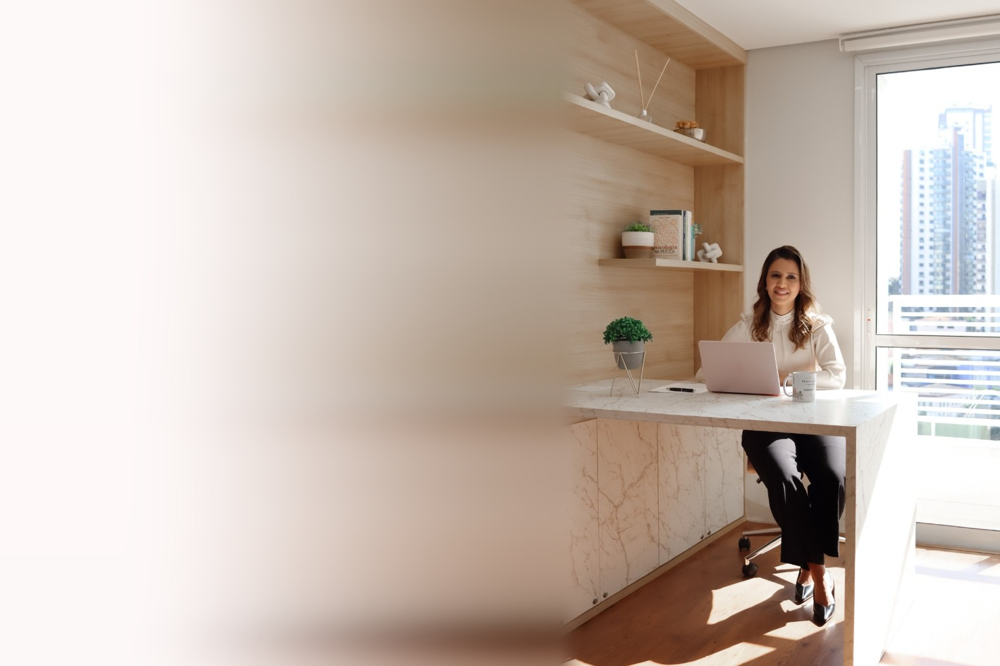

Atendimento individual
Atendimento terapêutico individual online
Quando fica difícil entender o que está acontecendo por dentro, olhar para a própria história pode ser o começo.
Um espaço de escuta e acompanhamento para compreender melhor seus pensamentos, relações, escolhas, limites e o momento que você está vivendo.
Tem coisas que começam a pesar antes mesmo de você conseguir nomeá-las.
- Um relacionamento que ocupa seus pensamentos.
- Uma decisão que você adia.
- Um limite que não consegue colocar.
- Uma mudança que trouxe mais dúvidas do que respostas.
Ou simplesmente aquela sensação de que alguma coisa não está bem, mesmo sem saber explicar exatamente o quê.
O atendimento é um espaço para olhar com mais atenção para essas questões e compreender o que pode existir por trás delas.
O processo
O que podemos olhar durante o processo?
- identidade e autoconhecimento
- conflitos nos relacionamentos
- limites e dificuldade de se posicionar
- família e vida afetiva
- mudanças pessoais e profissionais
- sobrecarga e conflitos internos
- escolhas e tomadas de decisão
- padrões de comportamento e relações
- momentos de transição
- necessidade de organizar pensamentos e compreender o momento atual
Você não precisa chegar sabendo exatamente o que precisa resolver. Entender o que está acontecendo também faz parte do processo.
O caminho
Como funciona?
-
Primeiro contato
Você entra em contato para conhecer o funcionamento do atendimento e consultar a disponibilidade.
-
Primeiro encontro
Um primeiro espaço para Thais conhecer sua história, entender o que motivou sua busca e conversar com você sobre o acompanhamento.
-
Acompanhamento online
Os encontros são realizados exclusivamente online e, ao longo do processo, questões relacionadas à sua história, relações, comportamentos e momento de vida podem ser exploradas.

A terapeuta
Quem estará com você nesse processo?
Thais Lourenço
Terapeuta, palestrante e estudante de Psicologia.
Sua trajetória passou pela área da saúde, pelo ambiente empresarial e pelos estudos sobre desenvolvimento humano.
Hoje, sua atuação parte de um olhar para a pessoa além da questão que a levou a buscar ajuda: sua história, relações, ambientes e experiências também importam.
Escuta próxima, comunicação direta e respeito à individualidade fazem parte da maneira como conduz seus atendimentos.
Dúvidas
Perguntas frequentes
O atendimento é online?
Sim. Os atendimentos são realizados exclusivamente online.
Qual é o valor?
Os valores são apresentados no primeiro contato.
Preciso saber exatamente o que quero trabalhar?
Não. Muitas pessoas procuram acompanhamento justamente porque estão com dificuldade de compreender ou organizar o que estão vivendo. Essas questões podem ser exploradas ao longo dos encontros.
Como faço para começar?
Entre em contato para receber as informações sobre o atendimento e consultar a disponibilidade.
Talvez você ainda não saiba explicar o que está acontecendo.
Mas já percebeu que precisa olhar para isso.
Conversar com a Thais